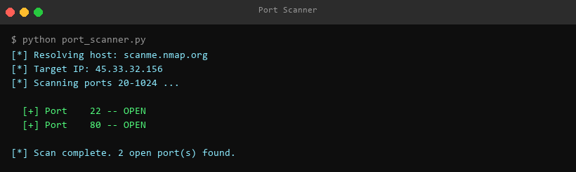
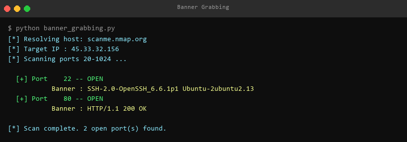
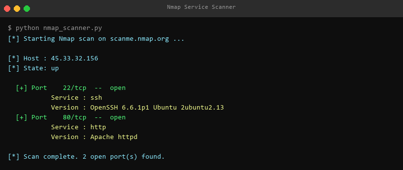
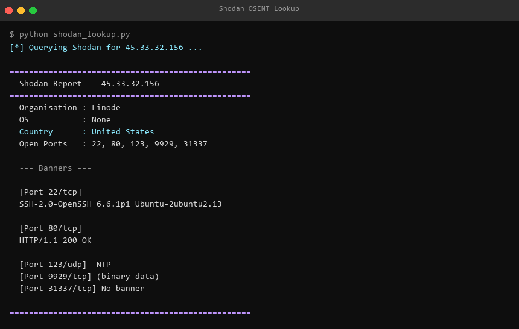
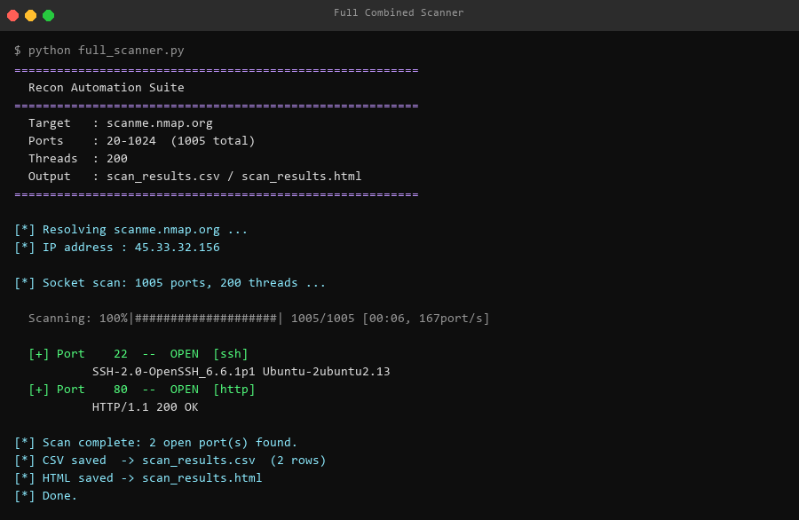

Network reconnaissance toolkit — automated scanning, banner grabbing, and OSINT
TCP port scanning using Python's socket library. Scans ports 20–1024, detects open ports with 1s timeout per port.

Extends the port scanner to capture raw service banners — SSH version strings, HTTP headers, FTP greetings.

python-nmap wrapper for deep service and version detection. Parses Nmap XML output into structured Python dicts.

Passive reconnaissance via the Shodan API. Retrieves organisation, OS, country, open ports, and raw banners without touching the target.

Multi-threaded scanner combining all tools. 200 threads, tqdm progress bar, CLI arguments, CSV export and HTML report generation.
